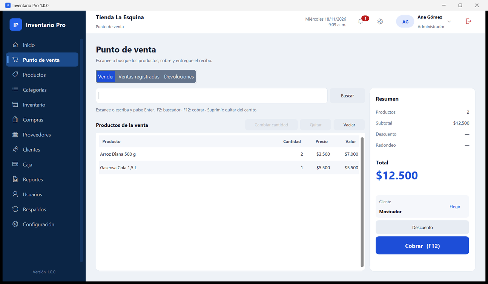
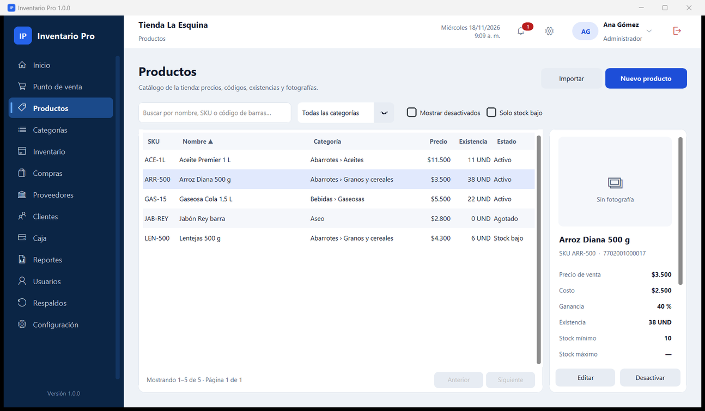
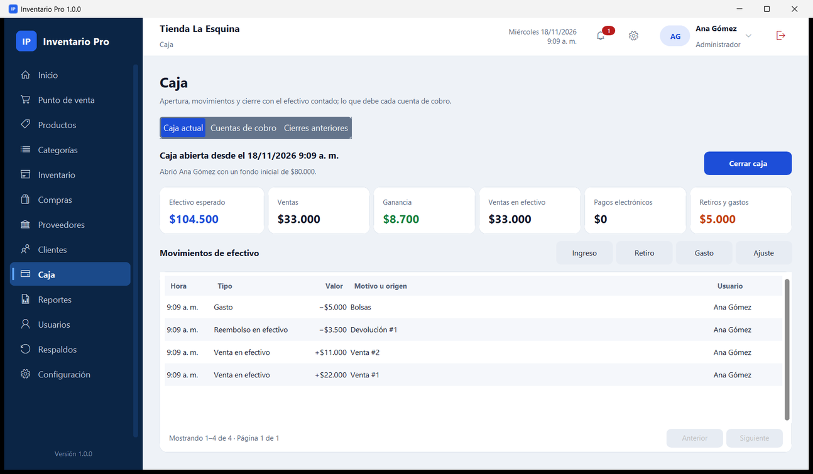

1
Punto de venta
Escanee o busque el producto, cobre en efectivo, Nequi o tarjeta (o combinados) y entregue el recibo.
Inventario Pro es un programa para Windows hecho para tiendas en Colombia. Vende con lector de códigos de barras, descuenta el inventario solo, lleva la caja y le dice cuánto ganó. Funciona sin internet y sus datos se quedan en su computador.
Descargar para WindowsVersión 1.0.0 · 21 MB · Windows 10 y 11 · Se descarga gratis y se activa con una licencia.

Todo lo que se registra queda guardado con su historial: nada se borra y cada cambio importante queda anotado con quién y cuándo lo hizo.
Escanee o busque el producto, cobre en efectivo, Nequi o tarjeta (o combinados) y entregue el recibo.
Cada venta, compra y devolución mueve las existencias. Entradas, salidas, ajustes, conteos y kardex.
Apertura, gastos, retiros y cierre con lo que debería haber. También lo que debe cada cuenta de Nequi.
Pedidos con fecha de llegada y recordatorio, recepción con faltantes y precios de venta sugeridos.
Ventas a nombre de un cliente, devoluciones a partir de la venta y comprobante en PDF.
Ventas, inventario, compras, caja y rentabilidad, con exportación a Excel, CSV y PDF.
Una copia cada vez que cierra el programa, también en una USB y con contraseña si quiere.
Administrador, supervisor, cajero y encargado de inventario: cada uno ve y hace solo lo que le corresponde.
Térmicas de 58 y 80 mm o impresora normal, y cajón monedero. Todo opcional.
Pantallas reales del programa (con datos de ejemplo).




| Sistema | Windows 10 u 11 de 64 bits |
|---|---|
| Espacio en disco | Unos 60 MB para el programa, más sus datos |
| Internet | No hace falta para trabajar. Si hay conexión, el programa busca solo sus actualizaciones. |
| Lector de códigos | Opcional: cualquier lector USB que funcione como teclado |
| Impresora y cajón | Opcionales: térmica de 58 u 80 mm, impresora normal y cajón conectado a la térmica |
El programa se descarga gratis. Para usarlo, cada computador necesita su propia licencia, que le enviamos al recibir su solicitud de activación.
Sus datos (productos, ventas, clientes) se guardan en su computador y no se envían a ningún lado. El programa solo se conecta a internet para buscar actualizaciones, sin enviar información de su tienda. El recibo que imprime el programa es un comprobante comercial: no es una factura electrónica. Si su negocio está obligado a facturar electrónicamente, consulte con su contador.